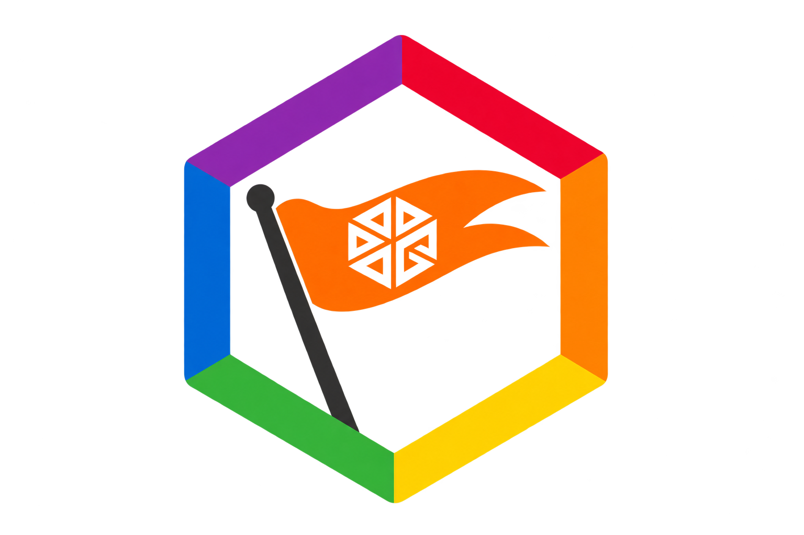
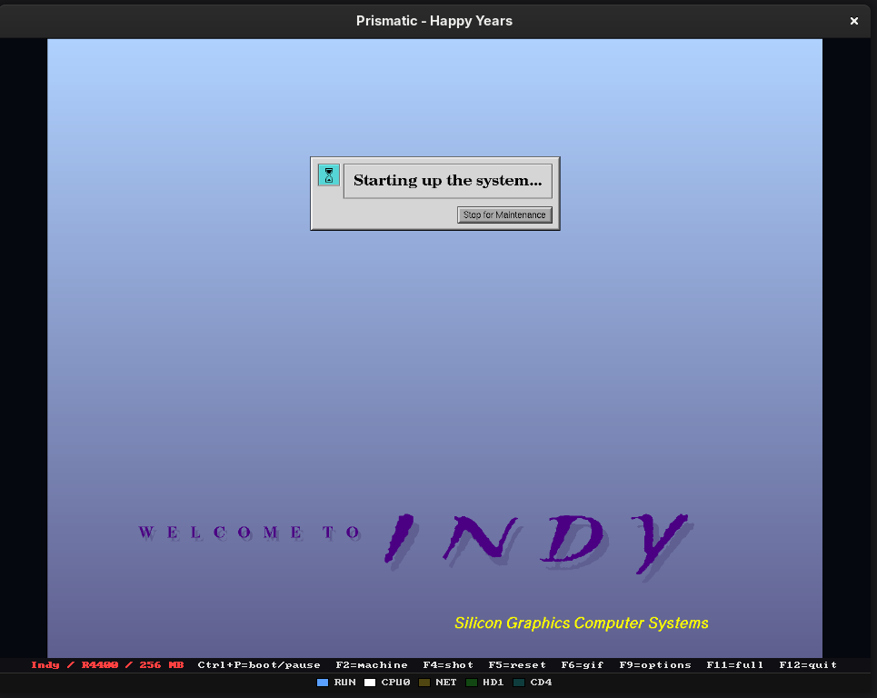
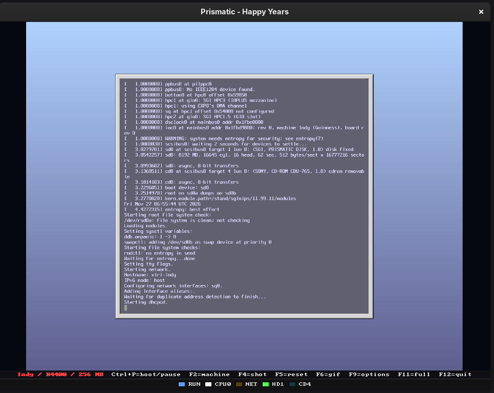
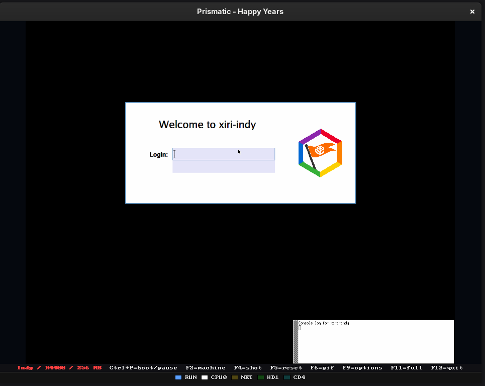
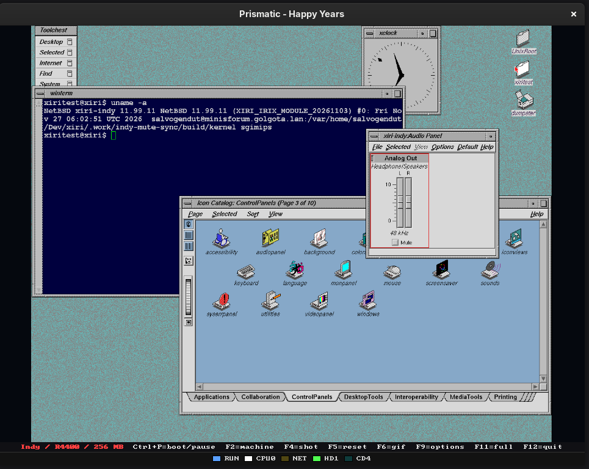

NetBSD · SGI · MIPS
A future for
SGI workstations.
The desktop you remember.
A foundation that keeps moving.
XiriBSD brings the Xiri project’s original IRIX desktop and application compatibility work into a NetBSD-derived distribution for SGI MIPS machines.
Follow development
The project
Original desktop.
Maintained foundation.
Xiri runs original SGI IRIX desktop programs and selected MIPS applications on NetBSD. The aim is to keep SGI workstations useful while preserving the familiar experience of 4Dwm, Toolchest, Icon Catalog, File Manager, and winterm.
A compatibility module provides the IRIX interfaces those programs expect. NetBSD supplies the operating system, device drivers, Xorg display server, and xdm login. Users can choose the IRIX desktop or a native NetBSD session.
XiriBSD is the distribution effort around that work: reproducible builds, upstream NetBSD integration, and installation media. Install the native system first, then run xiriprep inside XiriBSD to prepare an IRIX desktop account from your own installed IRIX disk image. Follow the installation howto for Prismatic or standalone IRIS setup, native installation, and donor import.
Explore the Xiri projectWork in progress
Built around SGI.
The Indy is our reference machine. Xiri also has graphical desktop results on Indigo2, O2, and Octane in IRIS emulation, with separate IRIX 6.5.22 and 6.5.30 installations. Physical workstation testing is still ahead.
- IndyReference platform
- Indigo2IRIS emulation
- O2IRIS emulation
- OctaneIRIS emulation
From boot to desktop
Screenshots
An SGI Indy R4400 in emulation, from startup to the IRIX desktop on NetBSD. Select an image to view it at full size.


01 · Startup
The familiar SGI Indy startup screen.


02 · NetBSD boot
NetBSD starts up on the emulated Indy.


03 · Graphical login
The Xiri login screen, ready for a desktop session.


04 · IRIX desktop
Original IRIX desktop tools running on NetBSD.
Release images
Downloads
XiriBSD ISO images
Download links for XiriBSD ISO images will be added here when releases are available. No releases are available yet.
Read the release planGet involved
A one man band.
For now.
XiriBSD is a one man band for now, and collaboration is welcome. If you’d like to help with development, testing, documentation, or bringing SGI machines back into use, I’d love to hear from you.
Drop me an email at salvogendut @ that big search engine turned IT giant dot com.
Join the project on GitHub